Data Collection
Each day, personal wearable health data is downloaded using the Garmin Connect API through cyberjunky/python-garminconnect. This API is a community-maintained Python client and is worth noting that this is not Garmin's official developer API. It authenticates using Garmin Connect login credentials, which are stored in a .env file and excluded from version control via .gitignore. After logging in, session tokens get cached locally so the script doesn't have to log in fresh every run.
The code builds a list of each date that has occurred since data collection started on September 4, 2026. Loops are then made through that list of dates, making API calls for each day and metric and saved to variables for simpler indexing. Right now, that's 40+ metrics per day. Examples of some of the key metrics are sleep stage breakdowns, heart rate variability, respiration rate, and blood oxygen saturation. This metric quantity will likely shrink once EDA identifies which features actually matter. Each API call includes a two-second delay, so the server doesn't get bogged down and days don't get skipped from rate limiting.
Each day's data comes back as a dictionary, so results get stored in a variable first and parsed from there rather than making repeat calls for the same day. Everything gets mapped into a day-by-day dictionary, then written out to CSV in the raw data folder.
Before pulling new data, the script checks whether the CSV already exists. If the CSV exists, it calculates which days are already saved and only pulls what is missing. In addition, it also pulls the two most recent days already in the file. This is necessary because if the data for "today" gets pulled in the morning, the day is then marked as complete in the CSV even though the rest of the day's readings haven't happened yet. Repulling the last two days catches those readings instead of potentially leaving gaps. New data is written to a new data frame, and the two data frames are concatenated. The CSV gets overwritten and returns the full, updated set.
The script also prints status updates as it runs and reports total run time at the end.
Sources
API Documentation
This project uses cyberjunky/python-garminconnect, a community-maintained Python client for Garmin Connect, rather than Garmin's official developer API. After authenticating with Garmin Connect credentials, individual metrics are pulled with one method call per metric, per day. For example, sleep data for a given day is retrieved with:
sleep = client.get_sleep_data(day)This call returns a nested dictionary containing sleep stage durations, sleep score breakdowns, overnight HRV, and related sleep metrics for that date, which are then parsed out into individual fields.
Raw vs. Cleaned
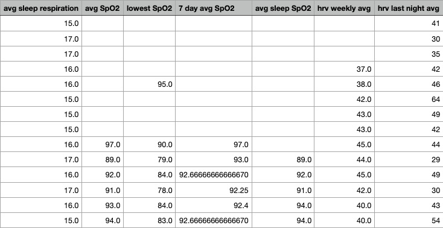
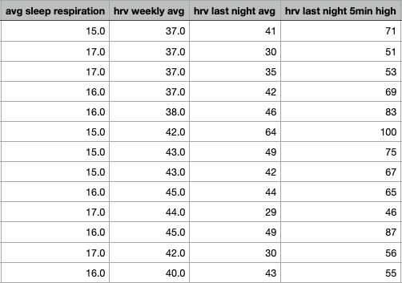
Cleaning Process
Two large issues were revealed when scanning for missing values. The SpO2-related columns (avg SpO2, lowest SpO2, 7-day avg SpO2, avg sleep SpO2) and the first rows of hrv weekly avg had blank values.
SpO2 data is missing for about the first week of collection because that tracking setting was not enabled on the watch yet. Due to this being truly missing values, the SpO2 columns were split into their own dataset rather than imputed. They were then dropped from the main working dataset. In the future, when more data is collected in this category and when other historical data is received from Elpis Alliance, re-adding the columns and removing the missing rows will be considered. In the meantime, this option preserves the SpO2 data for a future SpO2-specific dataset once more data accumulates from 9/12 onward.
The early gaps in hrv weekly avg are not the same problem as the missing SpO2 data. That metric is a rolling seven-day average, so it genuinely could not be calculated yet during the first few days of data collection. This data isn't truly missing; it just didn't exist yet. As such, backfilling those rows with the first real calculated weekly average was determined to be reasonable in this case, since it is not a fabricated calculation.
A separate issue was discovered while scanning for outliers. The most recent day in the dataset consistently showed unusually low values for metrics like resting and total calories, among others. This is a direct consequence of how the day is pulled. If a day's data is pulled before that day is over, metrics like calories and steps haven't finished accumulating yet. Rather than treat this as an actual low value, the most recent day is dropped from the dataset before analysis.
Remaining outliers (for example, a low REM sleep percentage on 9/5, or elevated heart rate and stress on certain nights) were reviewed individually rather than removed automatically. These reflect real recorded nights tied to known factors, such as late nights, nightly interruptions from pets or family members, or lifestyle factors like alcohol use, rather than data collection errors.
Exploratory Visualizations
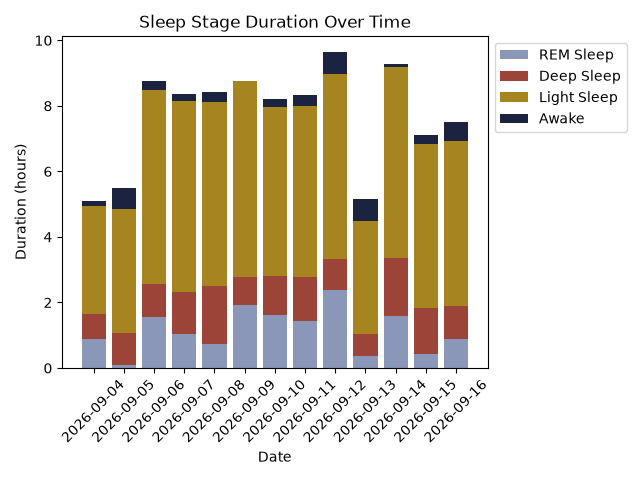
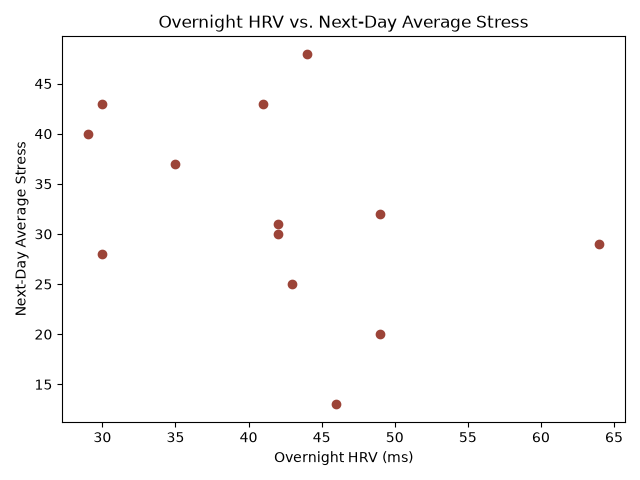
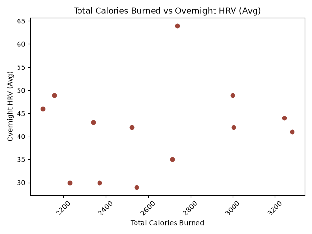
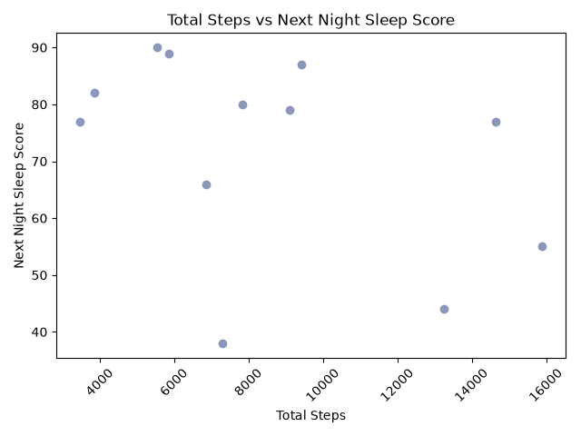
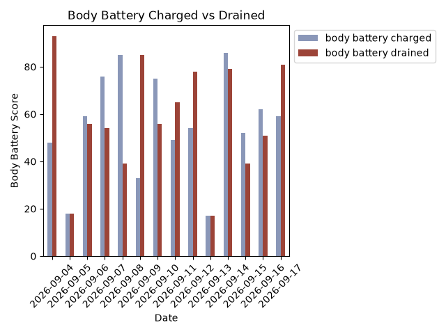
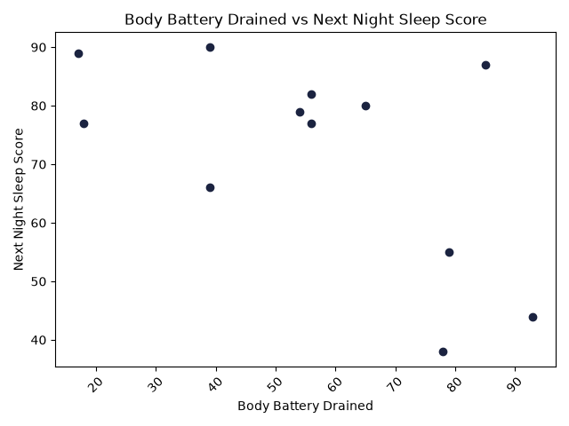
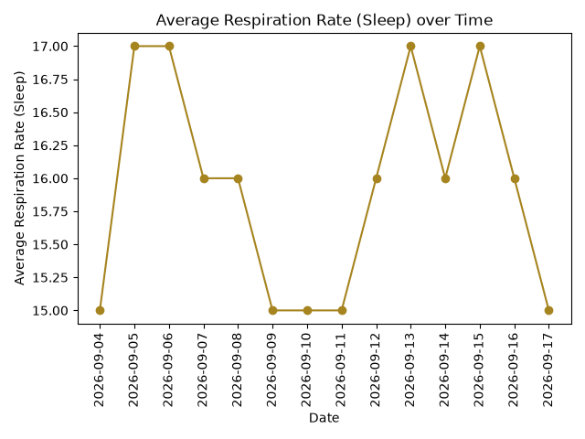
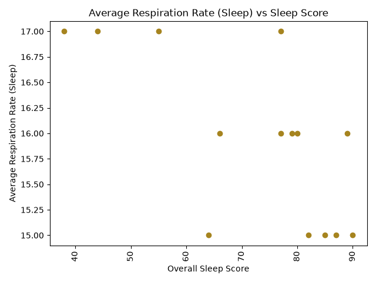
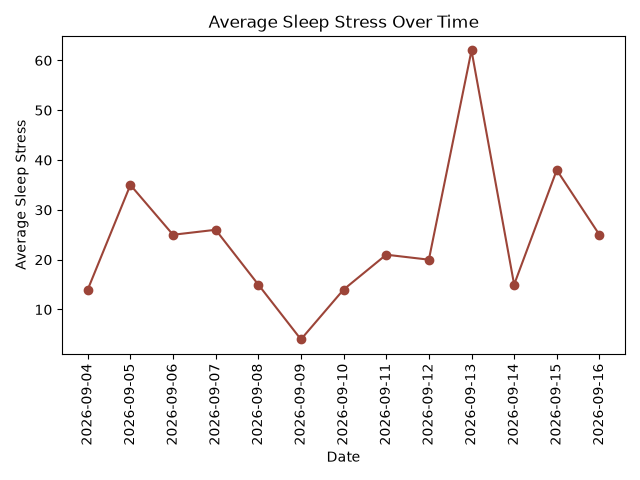
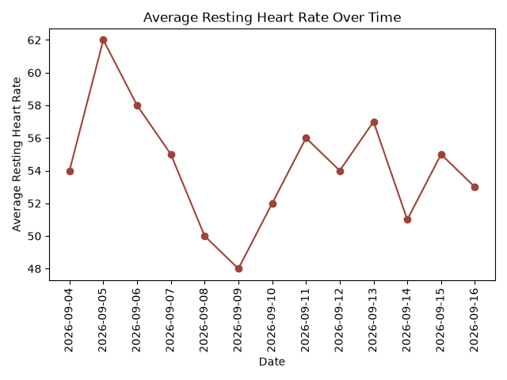
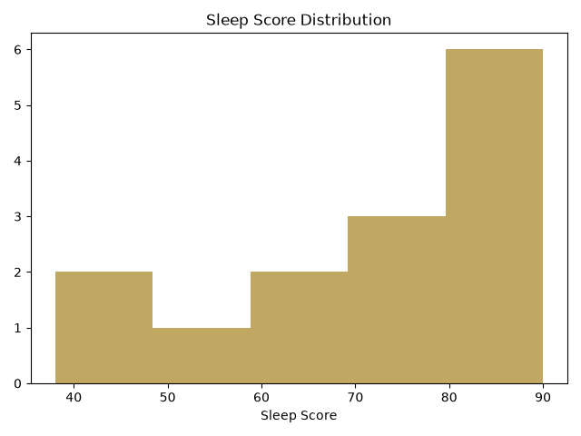
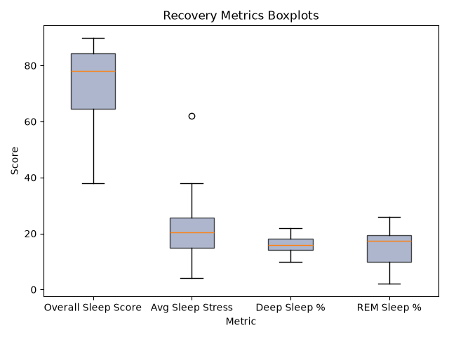
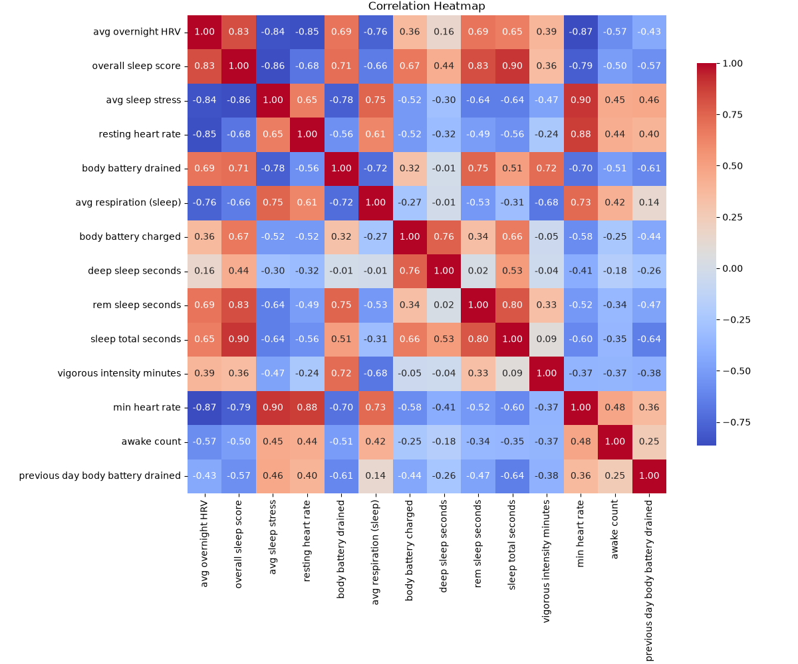
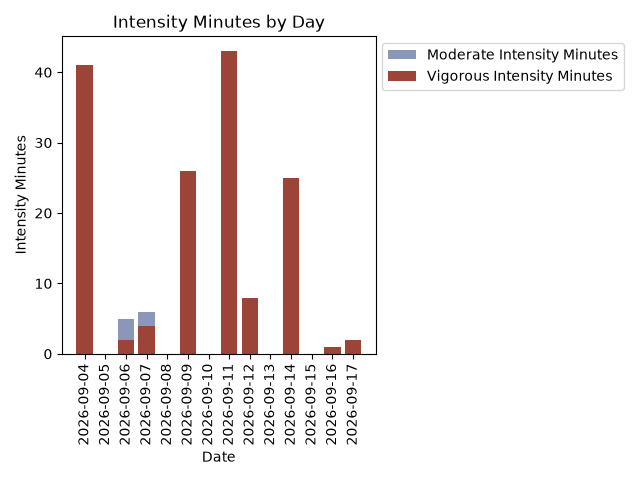